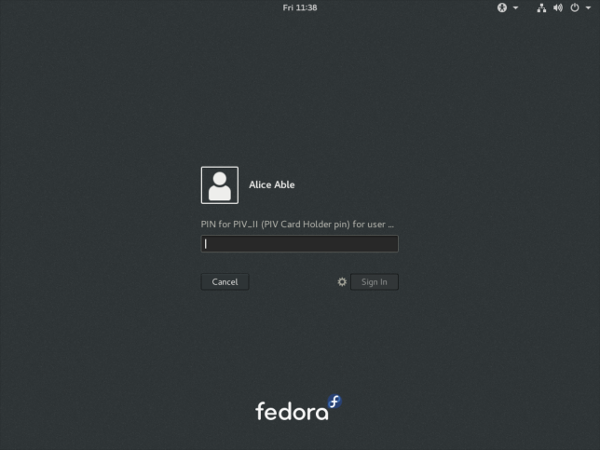

Smart card login with YubiKey NEO
In this post I give an overview of smart cards and their potential advantages, and share my adventures in using a Yubico YubiKey NEO device for smart card authentication with FreeIPA and SSSD.
Smart card overview
Smart cards with cryptographic processors and secure key storage (private key generated on-device and cannot be extracted) are an increasingly popular technology for secure system and service login, as well as for signing and encryption applications (e.g. code signing, OpenPGP). They may offer a security advantage over traditional passwords because private key operations typically require the user to enter a PIN. Therefore the smart card is two factors in one: both something I have and something I know.
The inability to extract the private key from a smart card also provides an advantage over software HOTP/TOTP tokens which, in the absense of other security measures such as encrypted filesystem on the mobile device, allow an attacker to extract the OTP seed. And because public key cryptography is used, there is no OTP seed or password hash sitting on a server, waiting to be exfiltrated and subjected to offline attacks.
For authentication applications, a smart card carries an X.509 certificate alongside a private key. A login application would read the certificate from the card and validate it against trusted CAs (e.g. a company’s CA for issuing smart cards). Typically an OCSP or CRL check would also be performed. The login application then challenges the card to sign a nonce, and validates the signature with the public key from the certificate. A valid signature attests that the bearer of the smart card is indeed the subject of the certificate. Finally, the certificate is then mapped to a user either by looking for an exact certificate match or by extracting information about the user from the certificate.
Test environment
In my smart card investigations I had a FreeIPA server with a single Fedora 24 desktop host enrolled. alice was the user I tested with. To begin with, she had no certificates and used her password to log in.
I was doing all of my testing on virtual machines, so I had to enable USB passthrough for the YubiKey device. This is straightforward but you have to ensure the IOMMU is enabled in both BIOS and kernel (for Intel CPUs add intel_iommu=on to the kernel command line in GRUB).
In virt-manager, after you have created the VM (it doesn’t need to be running) you can Add Hardware in the Details view, then choose the YubiKey NEO device. There are no doubt virsh incantations or other ways to establish the passthrough.
Finally, on the host I stopped the pcscd smart card daemon to prevent it from interfering with passthrough:
# systemctl stop pcscd.service pcscd.socketProvisioning the YubiKey
For general smart card provisioning steps, I recommend Nathan Kinder's post on the topic. But the YubiKey NEO is special with its own steps to follow! First install the ykpers and yubico-piv-tool packages:
sudo dnf install -y ykpers yubico-piv-toolIf we run yubico-piv-tool to find out the version of the PIV applet, we run into a problem because a new YubiKey comes configured in OTP mode:
[dhcp-40-8:~] ftweedal% yubico-piv-tool -a version
Failed to connect to reader.The YubiKey NEO supports a variety of operation modes, including hybrid modes:
0 OTP device only.
1 CCID device only.
2 OTP/CCID composite device.
3 U2F device only.
4 OTP/U2F composite device.
5 U2F/CCID composite device.
6 OTP/U2F/CCID composite device.(You can also add 80 to any of the modes to configure touch to eject, or touch to switch modes for hybrid modes).
We need to put the YubiKey into CCID (Chip Card Interface Device, a standard USB protocol for smart cards) mode. I originally configured the YubiKey in mode 86 but could not get the card to work properly with USB passthrough to the virtual machine. Whether this was caused by the eject behaviour or the fact that it was a hybrid mode I do not know, but reconfiguring it to mode 1 (CCID only) allowed me to use the card on the guest.
[dhcp-40-8:~] ftweedal% ykpersonalize -m 1
Firmware version 3.4.6 Touch level 1541 Program sequence 1
The USB mode will be set to: 0x1
Commit? (y/n) [n]: yNow yubico-piv-tool can see the card:
[dhcp-40-8:~] ftweedal% yubico-piv-tool -a version
Application version 1.0.4 found.Now we can initialise the YubiKey by setting a new management key, PIN and PIN Unblocking Key (PUK). As you can probably guess, the management key protects actions like generating keys and importing certificates, the PIN protects private key operations in regular use, the the PUK is kind of in between, allowing the PIN to be reset if the maximum attempts are exceeded. The current (default) PIN and PUK need to be given in order to reset them.
% KEY=`dd if=/dev/random bs=1 count=24 2>/dev/null | hexdump -v -e '/1 "%02X"'`
% echo $KEY
CC044321D49AC1FC40146AD049830DB09C5AFF05CD843766
% yubico-piv-tool -a set-mgm-key -n $KEY
Successfully set new management key.
% PIN=`dd if=/dev/random bs=1 count=6 2>/dev/null | hexdump -v -e '/1 "%u"'|cut -c1-6`
% echo $PIN
167246
% yubico-piv-tool -a change-pin -P 123456 -N $PIN
Successfully changed the pin code.
% PUK=`dd if=/dev/random bs=1 count=6 2>/dev/null | hexdump -v -e '/1 "%u"'|cut -c1-8`
% echo $PUK
24985117
% yubico-piv-tool -a change-puk -P 12345678 -N $PUK
Successfully changed the puk code.Next we must generate a private/public keypair on the smart card. Various slots are available for different purposes, with different PIN-checking behaviour. The Certificate slots page on the Yubico wiki gives the full details. We will use slot 9e which is for Card Authentication (PIN is not needed for private key operations). It is necessary to provide the management key on the command line, but the program also prompts for it (I’m not sure why this is the case).
% yubico-piv-tool -k $KEY -a generate -s 9e
Enter management key: CC044321D49AC1FC40146AD049830DB09C5AFF05CD843766
-----BEGIN PUBLIC KEY-----
MIIBIjANBgkqhkiG9w0BAQEFAAOCAQ8AMIIBCgKCAQEApT5tb99jr7qA8zN66Dbl
fu/Jh+F0nZvp7FXZRJQH12KgEeX4Lzu1S10b1HQ0lpHZWcqPQh2wbHaC8U7uYSLW
LqsjmFeJrskAerVAAH8v+tzy6DKlJKaLjAt8qWEJ1UWf5stJO3r9RD6Z80rOYPXT
MsKxmsb22v5lbvZTa0mILQeP2e6m4rwPKluQrODYkQkQcYIfedQggmYwo7Cxl5Lu
smtes1/FeUlJ+DG3mga3TrZd1Fb+wDJqQU3ghLul9qLNdPYyxdwDKSWkIOt5UusZ
2A8qECKZ8Wzv0IGI0bReSZYHKjhdm4aMMNubtKDuem/nUwBebRHFGU8zXTSFXeAd
gQIDAQAB
-----END PUBLIC KEY-----
Successfully generated a new private key.We then use this key to create a certificate signing request (CSR) via yubico-piv-tool. Although slot 9e does not require the PIN, other slots do require it, so I’ve included the verify-pin action for completeness:
% yubico-piv-tool -a verify-pin \
-a request-certificate -s 9e -S "/CN=alice/"
Enter PIN: 167246
Successfully verified PIN.
Please paste the public key...
-----BEGIN PUBLIC KEY-----
MIIBIjANBgkqhkiG9w0BAQEFAAOCAQ8AMIIBCgKCAQEApT5tb99jr7qA8zN66Dbl
fu/Jh+F0nZvp7FXZRJQH12KgEeX4Lzu1S10b1HQ0lpHZWcqPQh2wbHaC8U7uYSLW
LqsjmFeJrskAerVAAH8v+tzy6DKlJKaLjAt8qWEJ1UWf5stJO3r9RD6Z80rOYPXT
MsKxmsb22v5lbvZTa0mILQeP2e6m4rwPKluQrODYkQkQcYIfedQggmYwo7Cxl5Lu
smtes1/FeUlJ+DG3mga3TrZd1Fb+wDJqQU3ghLul9qLNdPYyxdwDKSWkIOt5UusZ
2A8qECKZ8Wzv0IGI0bReSZYHKjhdm4aMMNubtKDuem/nUwBebRHFGU8zXTSFXeAd
gQIDAQAB
-----END PUBLIC KEY-----
-----BEGIN CERTIFICATE REQUEST-----
MIICUzCCAT0CAQAwEDEOMAwGA1UEAwwFYWxpY2UwggEiMA0GCSqGSIb3DQEBAQUA
A4IBDwAwggEKAoIBAQClPm1v32OvuoDzM3roNuV+78mH4XSdm+nsVdlElAfXYqAR
5fgvO7VLXRvUdDSWkdlZyo9CHbBsdoLxTu5hItYuqyOYV4muyQB6tUAAfy/63PLo
MqUkpouMC3ypYQnVRZ/my0k7ev1EPpnzSs5g9dMywrGaxvba/mVu9lNrSYgtB4/Z
7qbivA8qW5Cs4NiRCRBxgh951CCCZjCjsLGXku6ya16zX8V5SUn4MbeaBrdOtl3U
Vv7AMmpBTeCEu6X2os109jLF3AMpJaQg63lS6xnYDyoQIpnxbO/QgYjRtF5Jlgcq
OF2bhoww25u0oO56b+dTAF5tEcUZTzNdNIVd4B2BAgMBAAGgADALBgkqhkiG9w0B
AQsDggEBADvyL13ayXRDWmRJ1dSi4lE9l128fy3Lt/1XoAC1D+000hWkXOPA+K8j
gR/Yg99K9v3U2wm6wtk2taEeogc4TebVawXezjw/hu4wq2sta3zVVJC9+yRrUeai
P+Gvj0KNesXK5MyHGpeiPb3SA/2GYYK04suM6a1vpA+sBvrca39klpgBrYY0N/9s
VE4gBBNhQa9jN8E9VMQXEPxYVH1tDrp7bRxg6V5spJb2oit6H+7Pe7xSC95ByCXw
Msprhk+B2nkrVaco5R/ZOG0jZdMOMOJXCuTbWKOaCDEN5hsLNdua6uBpiDCJ5v1I
l0Xmf53DC7jceF/XgZ0LUzbGzTDcr3o=
-----END CERTIFICATE REQUEST-----yubico-piv-tool -a request-certificate is not very flexible; for example, it cannot create a CSR with request extensions such as including the user’s email address or Kerberos principal name in the Subject Alternative Name extension. For such non-trivial use cases, openssl req or other programs can be used instead, with a PKCS #11 module providing acesss to the smart card’s signing capability. Nathan Kinder's post provides full details.
With CSR in hand, alice can now request a certificate from the IPA CA. I have covered this procedure in previous articles so I’ll skip it here, except to add that it is necessary to use a profile that saves the newly issued certificate to the subject’s userCertificate LDAP attribute. This is how SSSD matches certificates in smart cards with users.
Once we have the certificate (in file alice.pem) we can import it onto the card:
% yubico-piv-tool -k $KEY -a import-certificate -s 9e -i alice.pem
Enter management key: CC044321D49AC1FC40146AD049830DB09C5AFF05CD843766
Successfully imported a new certificate.Configuring smart card login
OpenSC provides a PKCS #11 module for interfacing with PIV smart cards, among other things:
# dnf install -y openscEnable smart card authentication in /etc/sssd.conf:
[pam]
pam_cert_auth = TrueThen restart SSSD:
# systemctl restart sssdNext, enable the OpenSC PKCS #11 module in the system NSS database:
# modutil -dbdir /etc/pki/nssdb \
-add "OpenSC" -libfile opensc-pkcs11.soWe also need to add the IPA CA cert to the system NSSDB. This will allow SSSD to validate certificates from smart cards. If smart card certificates are issued by a sub-CA or an external CA, import that CA’s certificate instead.
# certutil -d /etc/ipa/nssdb -L -n 'IPA.LOCAL IPA CA' -a \
| certutil -d /etc/pki/nssdb -A -n 'IPA.LOCAL IPA CA' -t 'CT,C,C'One hiccup I had was that SSSD could not talk to the OCSP server indicated in the Authority Information Access extension on the certificate (due to my DNS not being set up correctly). I had to tell SSSD not to perform OCSP checks. The sssd.conf snippet follows. Do not do this in a production environment.
[sssd]
...
certificate_verification = no_ocspThat’s pretty much all there is to it. After this, I was able to log in as alice using the YubiKey NEO. When logging in with the card inserted, instead of being prompted for a password, GDM prompts for the PIN. Enter the pin, and it lets you in!

Conclusion
I mentioned (or didn’t mention) a few standards related to smart card authentication. A quick review of them is warranted:
- CCID is a USB smart card interface standard.
- PIV (Personal Identify Verification) is a smart card standard from NIST. It defines the slots, PIN behaviour, etc.
- PKCS #15 is a token information format. OpenSC provides an PKCS #15 emulation layer for PIV cards.
- PKCS #11 is a software interface to cryptographic tokens. Token and HSM vendors provide PKCS #11 modules for their devices. OpenSC provides a PKCS #11 interface to PKCS #15 tokens (including emulated PIV tokens).
It is appropriate to mention pam_pkcs11, which is also part of the OpenSC project, as an alternative to SSSD. More configuration is involved, but if you don’t have (or don’t want) an external identity management system it looks like a good approach.
You might remember that I was using slot 9e which doesn’t require a PIN, yet I was still prompted for a PIN when logging in. There are a couple of issues to tease apart here. The first issue is that although PIV cards do not require the PIN for private key operations on slot 9e, the opensc-pkcs11.so PKCS #11 module does not correctly report this. As an alternative to OpenSC, Yubico provide their own PKCS #11 module called YKCS11 as part of yubico-piv-tool but modutil did not like it. Nevertheless, a peek at its source code leads me to believe that it too declares that the PIN is required regardless of the slot in use. I could not find much discussion of this discrepancy so I will raise some tickets and hopefully it can be addressed.
The second issue is that SSSD requires the PIN and uses it to log into the token, even if the token says that a PIN is not required. Again, I will start a discussion to see if this is really the intended behaviour (perhaps it is).
The YubiKey NEO features a wireless (NFC) interface. I haven’t played with it yet, but all the smart card features are available over that interface. This lends weight to fixing the issues preventing PIN-less usage.
A final thought I have about the user experience is that it would be nice if user information could be derived or looked up based on the certificate(s) in the smart card, and a user automatically selected, instead of having to first specify “I am alice” or whoever. The information is there on the card after all, and it is one less step for users to perform. If PIN-less usage can be addressed, it would mean that a user can just approach a machine, plug in their smart card and hi ho, off to work they go. There are some indications that this does work with GDM and pam_pkcs11, so if you know how to get it going with SSSD I would love to know!

Except where otherwise noted, this work is licensed under a Creative Commons Attribution 4.0 International License .